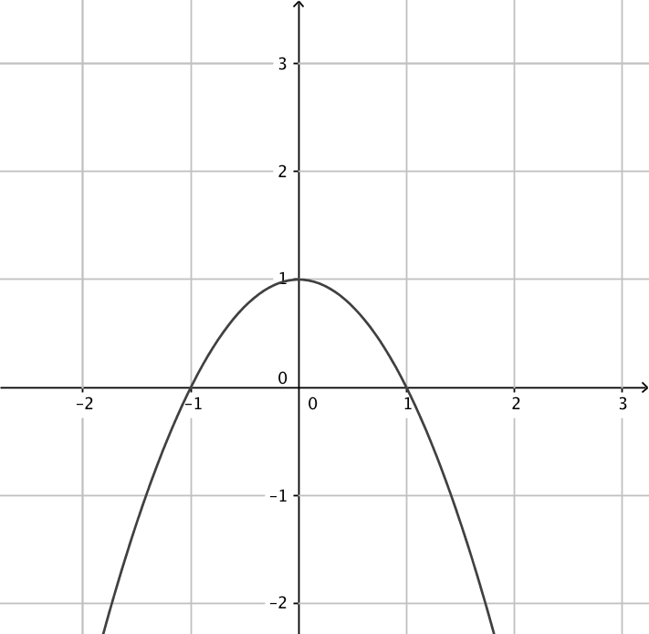
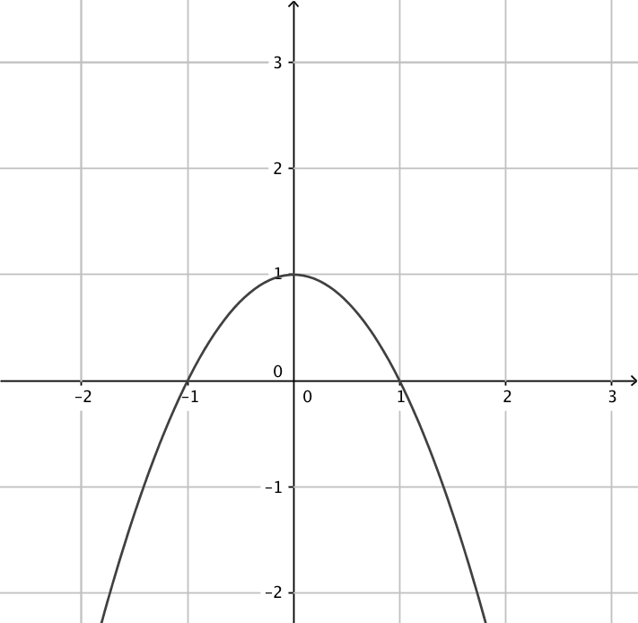
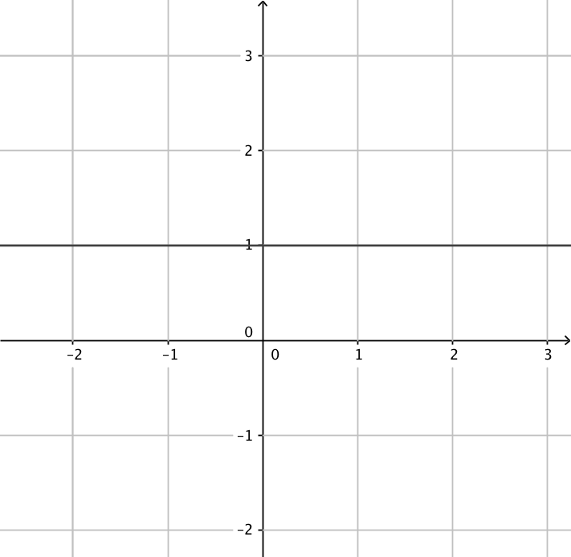
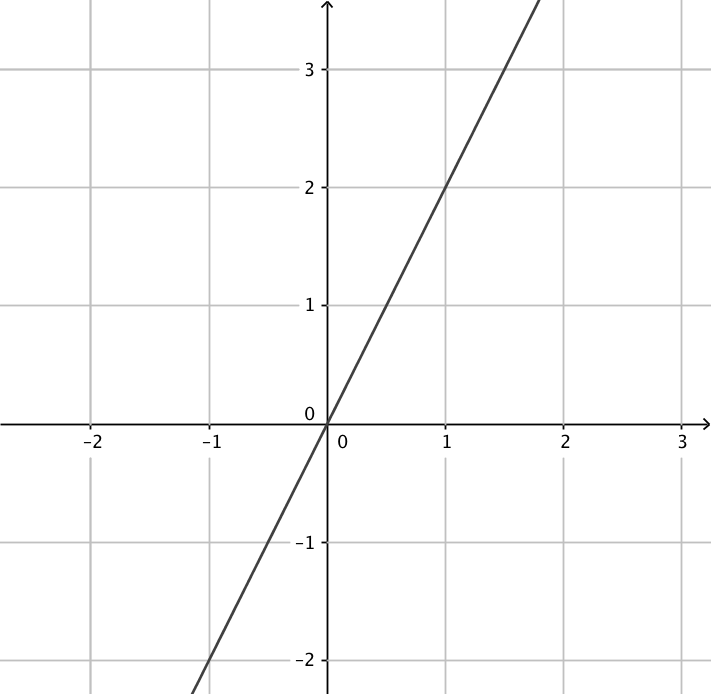
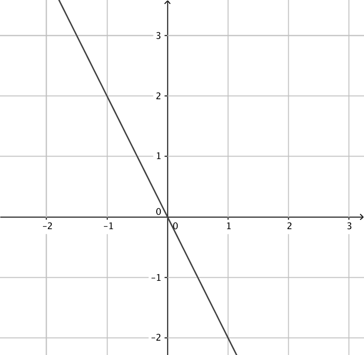
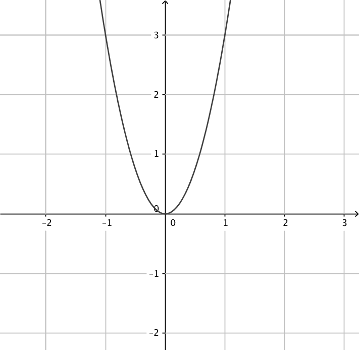
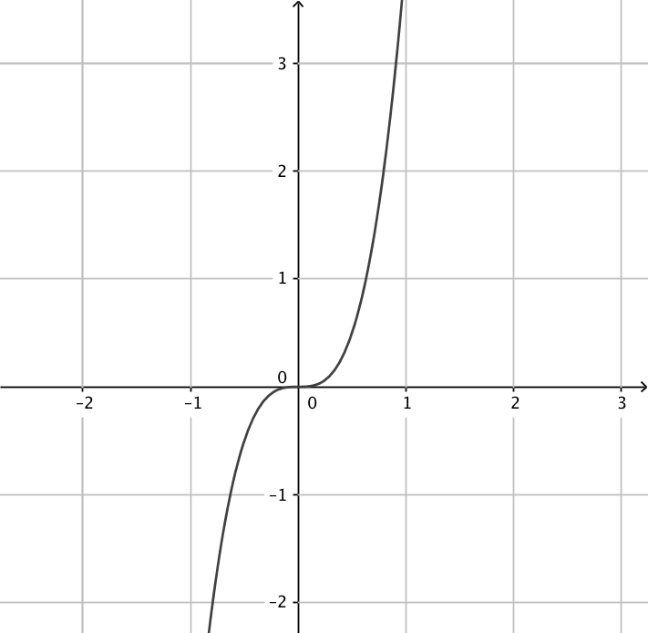
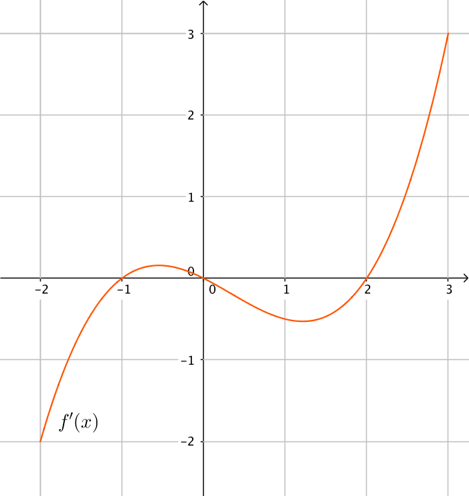

14. Repetition
Det var det. Sedan är det bara att repetera det som du lärt dig.
Uppgifter
- Förenkla
- \( \dfrac{2x^2-x}{3x} \)
\( \dfrac{2x^2-x}{3x} = \dfrac{x(2x-1)}{3x}=\dfrac{2x-1}{3} \)
- \( \dfrac{x^2-4}{x+2} \)
\( \dfrac{x^2-4}{x+2} = \dfrac{(x-2)(x+2)}{x+2} = x-2 \)
- \( \dfrac{x^2-3x+2}{2x-2} \)
Vi faktoriserar med hjälp av nollställena.
\( \dfrac{x^2-3x+2}{2x-2} = \dfrac{(x-1)(x-2)}{2(x-1)} = \dfrac{x-2}{2} \)
- \( \dfrac{2x^2-x}{3x} \)
- Lös dessa gamla studentexamensuppgifter. Inom parentesen har ni höst eller vår plus årtal och uppgiftens nummer.
- Förenkla \( \dfrac{x^2-9}{x+3} \). [H12, 2b)]
\( \dfrac{x^2-9}{x+3} = \dfrac{(x-3)(x+3)}{x+3} = x-3 \)
- Bestäm \( \dfrac{x}{1-x} + \dfrac{x}{1+x} \). [V05, 1a)]
\( ^{1+x)}\dfrac{x}{1-x} + ^{1-x)}\dfrac{x}{1+x} = \dfrac{x(1+x)+x(1-x)}{(1-x)(1+x)} =\dfrac{x+x^2+x-x^2}{1-x^2} = \dfrac{2x}{1-x^2} \)
- Beräkna \( \dfrac{1}{a-1}(a-\dfrac{1}{a}) \). [V06, 1c]
\( \dfrac{1}{a-1}(a-\dfrac{1}{a})=^{a-1)}\dfrac{a}{a-1}-\dfrac{a}{(a-1)^2}=\dfrac{a(a-1)-a}{(a-1)^2} =\dfrac{a^2-2a}{(a-1)^2} \)
- Bestäm \( \dfrac{1}{x}-\dfrac{1}{x^2}+\dfrac{1+x}{x^2} \). [H08, 1b)]
\( ^{x)}\dfrac{1}{x}-\dfrac{1}{x^2}+\dfrac{1+x}{x^2} = \dfrac{x\cdot1-1+1+x}{x^2}=\dfrac{2x}{x^2}=\dfrac{2}{x} \)
- Bestäm \( \dfrac{a^2}{3}-(\dfrac{-a}{3})^2 \). [V09, 1a)]
\( \dfrac{a^2}{3}-(\dfrac{-a}{3})^2 = ^{3)}\dfrac{a^2}{3}-\dfrac{a^2}{9}=\dfrac{3a^2-a^2}{9}=\dfrac{2a^2}{9} \)
- Förenkla \( (\sqrt{a}+1)^2-a-1 \). [V10, 1b)]
\( (\sqrt{a}+1)^2-a-1 = a+2\sqrt{a}+1-a-1 = 2\sqrt{a} \)
- Förenkla \( \dfrac{x^2-9}{x+3} \). [H12, 2b)]
- Kombinera rätt funktion med rätt derivatafunktion.
Välj bland följande funktioner:
 



Funktion Derivata funktion  
    Funktion Derivata funktion - Välj rätt derivatafunktion för funktionen i fråga.
Påstående 


\( f(x)=x-1 \) \( g(x)=x^2+1 \) \( h(x)=x+2 \) \( i(x)=x^3+1 \) \( j(x)=x^2-1 \) \( k(x)=x^3-1 \) Påstående \( f(x)=x-1 \) \( g(x)=x^2+1 \) \( h(x)=x+2 \) \( i(x)=x^3+1 \) \( j(x)=x^2-1 \) \( k(x)=x^3-1 \) - Ordna följande instruktioner i rätt ordning så att algoritmen blir sann då vi undersöker funktioner.
"Utgå från derivatans nollställen och bilda ett teckenschema.", "Sök derivatans nollställen, lös alltså ekvationen \( f’(x)=0 \).", "Derivera funktionen." och "Från teckenschemat vet du hur funktionen beter sig och var du hittar största och minsta värden.".
1. 2. 3. 4. Korrekt svar Derivera funktionen. 1. Sök derivatans nollställen, lös alltså ekvationen \( f’(x)=0 \). 2. Utgå från derivatans nollställen och bilda ett teckenschema. 3. Från teckenschemat vet du hur funktionen beter sig och var du hittar största och minsta värden. 4. - I figuren nedan visas grafen av derivatafunktionen \( f'(x) \) till en viss funktion \( f(x) \) i intervallet \( -2 < x < 3 \).

- Bestäm utgående från grafen nollställena till derivatafunktionen \( f'(x) \).
Nollställena är \( x= -1, x= 0 \) och \( x=2 \).
- Bestäm det intervall då funktionen \( f \) är avtagande.
\( f \) är avtagande då \( -2 \leq x \leq -1 \) och då \( 0 \leq x \leq 2 \).
- Bestäm utgående från grafen de lokala extremställena för funktionen \( f(x) \) och vilka typer av extremställen är det frågan om?
I \( x=-1 \) har vi ett minimivärde eftersom funktionen avtar och sedan växer den.
I \( x=0 \) har vi ett maximivärde eftersom funktionen växer för att sedan avta.
I \( x=2 \) har vi ett minimivärde eftersom funktionen avtar och sedan växer den.
Vilket av minimivärdena är de minsta kan vi inte säga något om, tyvärr.
- Bestäm utgående från grafen nollställena till derivatafunktionen \( f'(x) \).
- Bestäm
- \( D(x^2-1)(x+2) \)
\( D(x^2-1)(x+2)= (x^2-1)\cdot 1 + (x+2)2x = 3x^2+4x-1 \)
- \( D\dfrac{x^2-1}{x+2} \)
\( D\dfrac{x^2-1}{x+2}=\dfrac{(x+2)\cdot 2x-(x^2-1)\cdot 1}{(x+2)^2} =\dfrac{x^2+4x+1}{(x+2)^2} \)
- \( D(2x^2-1)^{14} \)
\( D(2x^2-1)^{14}=14(2x^2-1)^{13}\cdot 4x = 56x(2x^2-1)^{13} \)
- \( D[x(x^2-1)^6] \)
\( D[x(x^2-1)^6]=x\cdot 6(x^2-1)^5\cdot 2x +(x^2-1)^6\cdot 1 = 12x^2(x^2-1)^5+(x^2-1)^6 \)
- \( D(x^2-1)(x+2) \)
- K Orvar tillverkar konserverad prinskorv. Han vill packa prinskorvarna i konservburkar med volymen 2,0 dl. Hans konservburksmaskin kan tillverka konservburkar som har diametern mellan 4,5 och 8,5 cm. Bestäm diameter och höjd för den burk som har den minsta materialåtgång.
Volymen är \( V=0,2 =\pi r^2\cdot h \) och totala arean är \( 2\pi r^2+2\pi r\cdot h \).
Vår funktion är \( A(r)=2\pi r^2 + \dfrac{2\pi \cdot r \cdot 0,2}{\pi r^2} = 2\pi r^2+0,4r^{-1} \).
Derivatafunktioen är \( A'(r)= 4\pi r-0,4r^{-2} \). Nollstället för derivatafunktionen är \( r=3,17 \). Eftersom \( r \in [2,25 ; 4,25] \) så räcker det med att sätta in intervallets ändpunkter eller derivatans nollställe i funktionen och jämföra värdena.
A(2,25)= 31,99 cm2
A(3,17)=63,27 cm2
A(4,25)=113,58 cm2
Åtgången är minst då radien är 2,25 cm.
Diametern är 4,5 cm och höjden är 12,6 cm.
- Ge exempel på en växande funktion \( f \) som uppfyller följande villkor
- \( f(0)=1 \)
Vilken funktion som helst som går genom punkten \( (0,1) \) duger, tex \( f(x)=x+1 \).
- \( f'(1)=2 \)
Vilken funktion som hellst vars derivata har värdet 2 i då \( x=1 \). Tex \( f(x)=x^2-1 \).
- \( f''(2)=0 \)
Andra derivatan, eller derivatans derivatafunktion skall undersökas. Då den skall ha värdet 0 så gäller att \( f''(x)=C \), där \( C \) är någon konstant och \( f(x)=Dx \) där \( D \) är någon konstant. Tex \( f(x)=x \).
- \( f(0)=1 \)
- Bestäm \( \lim_{x \to 3} \dfrac{4x-12}{x^2-9} \).
\( \lim_{x \to 3} \dfrac{4x-12}{x^2-9} = \lim_{x \to 3} \dfrac{4(x-3)}{(x+3)(x-3)} \lim_{x \to 3} \dfrac{4}{x+3} = \dfrac{4}{3+3} = \dfrac{2}{3} \).
- Bestäm för funktionen \( f(x)=x^2-4x \) ekvationen för tangenten i \( x=1 \).
Derivatafunktionen är \( f'(x)=2x-4 \). Tangentens riktningskoefficient har värdet \( f'(1)=2\cdot 1 -4=-2 \). Då \( x=1 \) har \( y \) värdet \( f(1)=1^2-4\cdot 1 = -3 \).
Tangentens ekvation fås via \( y-y_0 = k(x-x_0) \Leftrightarrow y+3=-2(x-1) \Leftrightarrow y=-2x-1 \).
- Bestäm de tangenter för funktionen \( f(x)=\dfrac{1}{3}x^3+\dfrac{1}{2}x^2 \) som har riktningskoefficienten 2.
Derivatafunktionen är \( f'(x)= x^2+x \). De punkter där tangenten har riktningskoefficienten 2 får vi genom att lösa ekvationen \( f'(x)=2 \) alltså \( x^2+x=2 \) som har rötterna \( x_1=1 \) och \( x_2=-2 \).
Då \( x=1 \) är \( y=\dfrac{5}{6} \) och tangenten är \( y-\dfrac{5}{6}=2(x-1) \Leftrightarrow y=2x-\dfrac{7}{6} \).
Då \( x=-2 \) är \( y=-\dfrac{2}{3} \) och tangenten är \( y+\dfrac{2}{3}=2(x+2) \Leftrightarrow y=2x+\dfrac{10}{3} \).
- Berätta hur funktionen \( f(x)=\dfrac{2x^2-4}{x^2-1} \) beter sig. När är den växande och avtagande. Hurdana extremvärden har den?
Funktionen \( f \) är definierad då \( x^2-1\not=0 \Leftrightarrow x=\pm1 \).
\( f'(x)=\dfrac{(x^2-1)\cdot 4x - (2x^2-4)\cdot 2x}{(x^2-1)^2} = \dfrac{4x}{(x^2-1)^2} \). Vi söker nollställen för täljare och nämnare och bildar ett teckenschema.
För täljaren gäller \( 4x=0 \Leftrightarrow x=0 \) och för nämnaren gäller att den alltid är positiv.
Teckenschema:
\( \begin{array}{r|ccccccc} & & -1 & & 0 & & 1 & \\ \hline \textrm{Täljaren, } 4x & - & - & - & 0 & + & + & + \\ \textrm{Nämnaren, } (x^2-1)^2 & + & + & + & + & + & + & +\\ \textrm{Kvoten, } f'(x) & - & | & - & 0 & + & | & + \\ f(x) & \searrow & | & \searrow & & \nearrow &| & \nearrow \\ \end{array} \)
Funktionen är alltså avtagande då \( x < 0 \) förutom i \( x=-1 \) den inte är definierad. Då \( x > 0 \) är funktionen växande, förutom i \( x=1 \) där den inte är definierad.
Vi har ett lokalt minimum i \( x=0 \), funktionens värde är då 4.
- Visa att funktionen \( f(x)=\left\{ \begin{array}{rl} -x^2+1 & , x \geq 0 \\ 2x+1 & , x < 0 \\ \end{array}\right. \) är kontinuerlig i den reella talmängden.
Funktionen består av polynomfunktioner som är kontinuerliga. Det som vi måste undersöka är om funktionen är kontinuerlig i punkten 0. Vi gör det via gränsvärden och funktionsvärden.
\( \lim_{x \to 0-} 2x+1 = 2\cdot 0 + 1 = 1 \)
\( \lim_{x \to 0+} -x^2+1 = -0^2 + 1 = 1 \)
\( f(0)=-0^2+1=1 \)
Eftersom \( \lim_{x \to 0-} = \lim_{x \to 0+} = f(0) \) är funktionen kontinuerlig i punkten 0.
- För vilket värde på \( b \) är talföljden \( a_n=\dfrac{bn-2}{n+6}, n=0,1,2,3,\ldots \) strängt växande?
Vi undersöker \( f(x)=\dfrac{bx-2}{x+6}, \mathbb{R}_+\to\mathbb{R} \).
\( f'(x)=\dfrac{(x+6)b-(bx-2)\cdot 1}{(x+6)^2} = \dfrac{xb+6b-bx+2}{(x+6)^2}=\dfrac{6b+2}{(x+6)^2} \).
Om talföljden skall vara strängt växande gäller att \( f'(x) > 0 \). Eftersom nämnaren är positiv så skall täljaren vara positiv.
\( 6b+2 > 0 \Leftrightarrow 6b > -2 \Leftrightarrow b > -\dfrac{1}{3} \).
Då \( b > -\dfrac{1}{3} \) är talföljden \( (a_n) \) strängt växande.